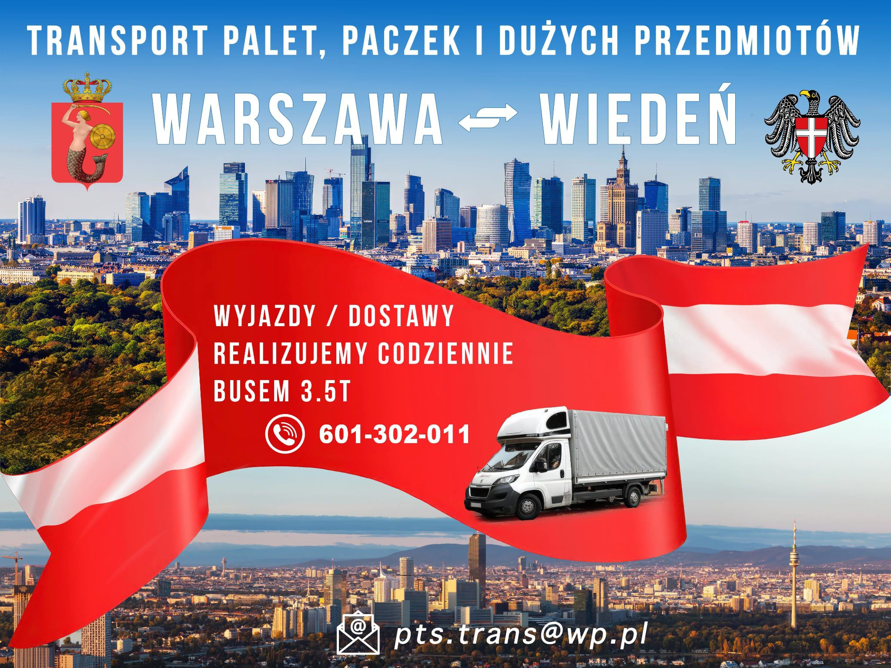
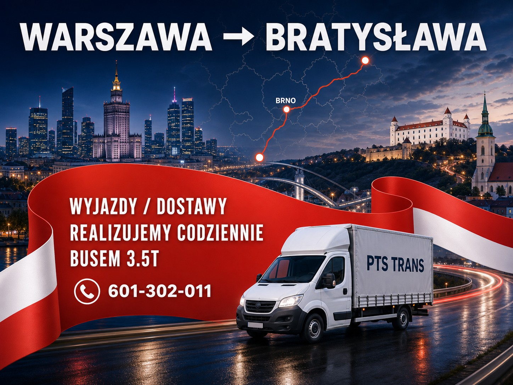
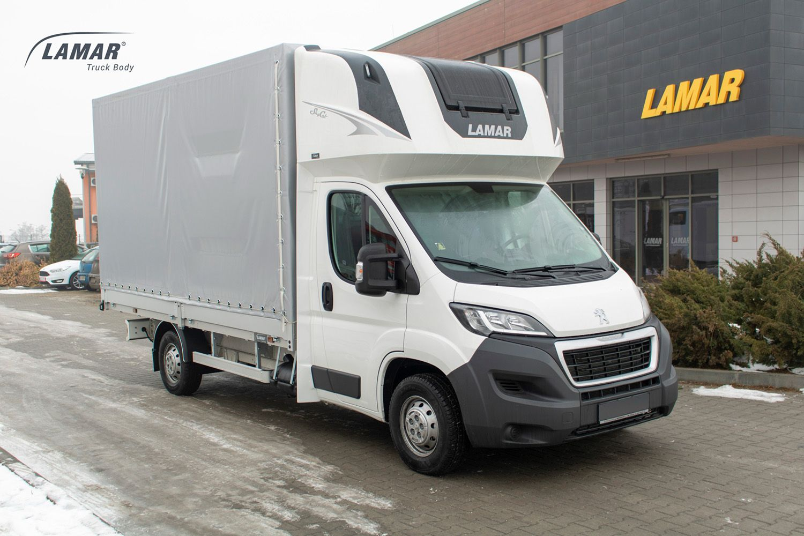
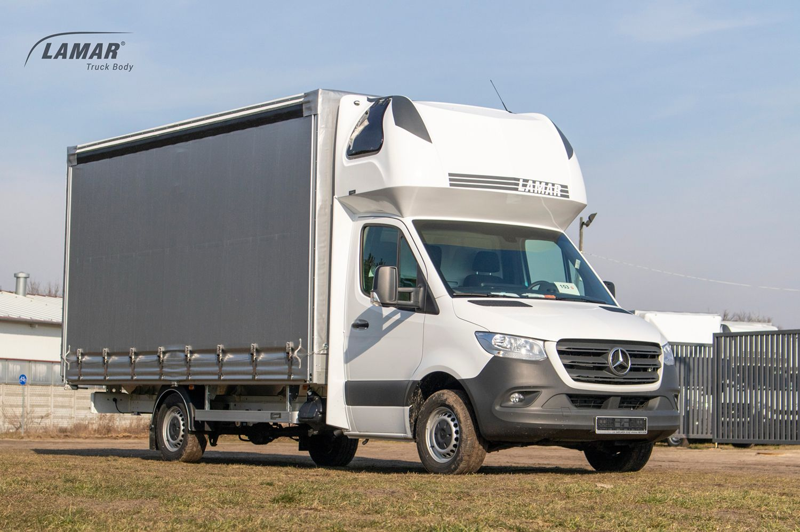
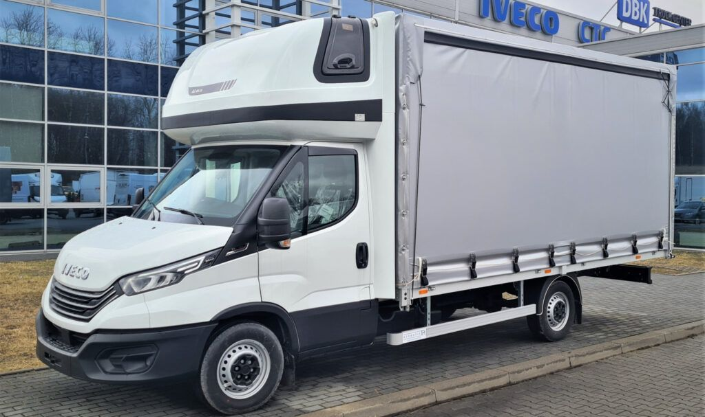
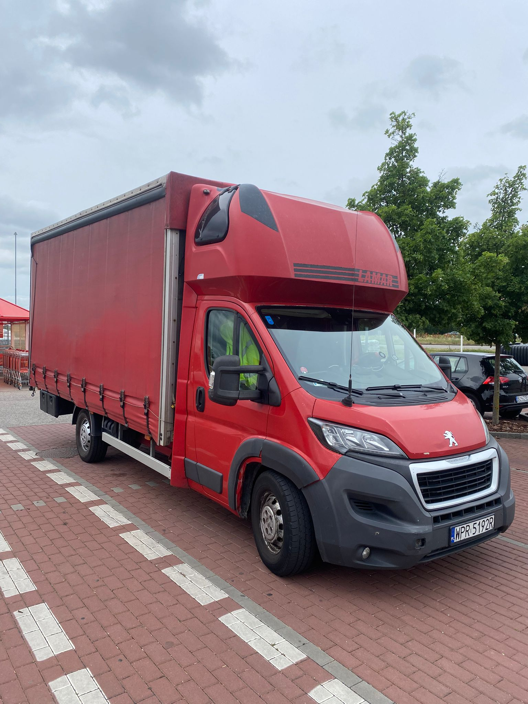

Palety na jutro
Pojedyncze palety i większe partie towaru, także autami do 15 palet EUR.
Stała relacja B2B • Warszawa - Wiedeń
Next Day Service dla firm na osi Warszawa-Wiedeń. Palety, części, paczki i cargo lotnicze jadą trasą z zaplanowanym odpoczynkiem kierowców, krótkim oknem odbioru i dostawą następnego dnia.
Dla kogo
PTS-TRANS obsługuje firmy, które nie mogą czekać na przypadkową spedycję: produkcję, magazyny, operatorów cargo, serwisy i dystrybucję. Trasa WAW-VIE jest osią oferty, a Brno i Bratysława pracują jako punkty wspierające po drodze.
Pojedyncze palety i większe partie towaru, także autami do 15 palet EUR.
Pilne części, paczki techniczne i towary, które blokują produkcję albo serwis.
Odbiory i dostawy przy lotniskach warszawskich oraz Vienna Airport.
Pilne zlecenia B2B na relacji Warszawa-Wiedeń, planowane pod następny dzień.
Jak działa trasa
Na trasie Warszawa-Wiedeń liczy się nie tylko auto, ale też rytm pracy kierowcy. PTS-TRANS wykorzystuje zaplecze noclegowe po drodze, żeby planować odpoczynek zgodnie z wymogami i utrzymać realną gotowość do pilnych transportów.
Szybkie przejęcie ładunku od firmy, magazynu albo lotniska i dobór auta do zlecenia.
Relacja ma stały rytm i punkty po drodze, zamiast każdorazowego budowania trasy od zera.
Dostawa następnego dnia do Wiednia, Vienna Airport lub punktu B2B w okolicy.
Cargo na osi WAW-VIE
Dla cargo lotniczego czas odbioru i komunikacja są krytyczne. PTS-TRANS obsługuje ładunki powiązane z lotniskami WWA oraz Vienna Airport jako element stałej relacji Warszawa-Wiedeń.
Mapa operacyjna
Warszawa-Wiedeń jest osią pracy. Brno i Bratysława są naturalnymi punktami po drodze, a lotniska WWA i Vienna Airport zamieniają trasę w konkretną usługę dla cargo i produkcji.


Flota na relację
Na trasie WAW-VIE liczy się dopasowanie przestrzeni, terminu i punktu odbioru. Flota obsługuje małe pilne części, palety, gabaryty i większe partie do 15 palet EUR.

Bus 3.5t do szybkich części, paczek i mniejszych partii na relacji WAW-VIE.

Plandeka do przewozów next day, gdy liczy się szybki załadunek i przewidywalna trasa.

Elastyczne auto do cargo, gabarytów i punktów odbioru przy trasie lub lotnisku.

Większy zestaw pod tonaż, partie paletowe i transport do 15 palet EUR.
Start zlecenia
W zapytaniu podaj punkt odbioru, punkt dostawy, godzinę gotowości, wymiary, wagę oraz liczbę palet lub paczek. Najszybciej potwierdzimy zlecenia na relacji WAW-VIE i przy lotniskach.